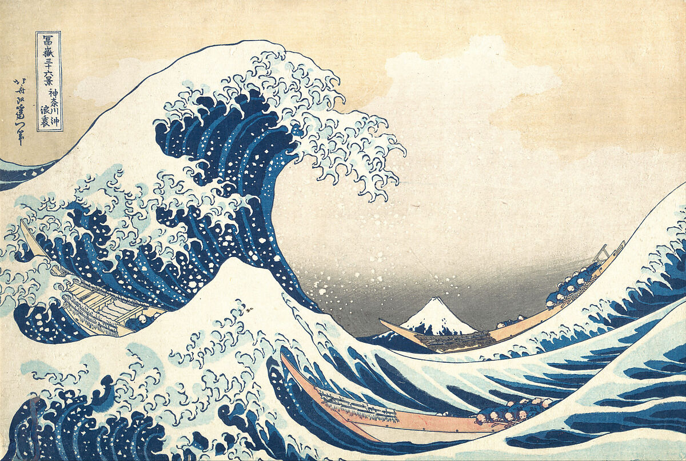
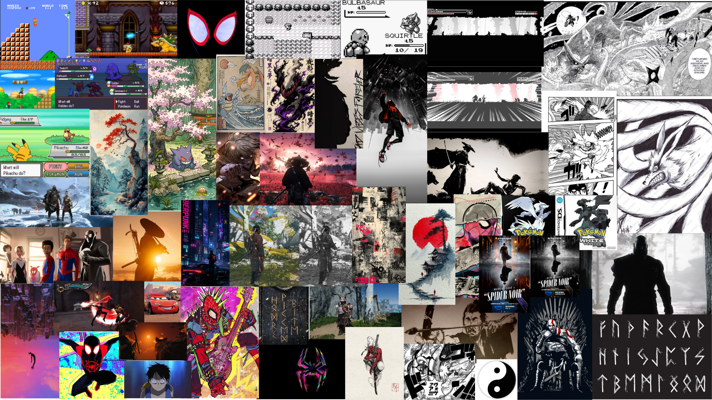

class: center, middle <!-- In deze textarea kan je in Markdown de slides aanpassen, zie https://github.com/gnab/remark/wiki voor alle mogelijkheden! --> # Inspiratie voor de digital garden van Seb <p></p> --- # Agenda 1. Onderwerp 2. 10 links 3. Oorspronkelijke idee 4. 50 afbeeldingen 5. Mijn hoofd idee --- # Onderwerp Ik probeer mijn intresses die een beetje bij elkaar passen hier te verbinden, bijv: - mythologie (vooral grieks en noors) - anime/manga - games - spiderverse style -gitaar, spiderpunk style - japan, oude tempels maar ook nieuwe cyberpunk style --- # 10 links <ul style="float: left; margin-right: 50px;"> Inspiratie <li>https://nl.pinterest.com/</li> site waar ik er achter kwam dat god of war ook<br> een zwart witte modus heeft <li>https://www.inverse.com/gaming/god-of-war-<br>ragnarok-black-white-mode-makes-no-sense</li> rede voor zwart wit mode ghost of tsushima <li>https://ew.com/gaming/ghost-of-tsushima-ak<br>ira-kurosawa-estate-cinematic-mode/</li> ghost of tsushima voor foto's <li>https://www.playstation.com/nl-nl/games/ghost-of-tsushima/</li> ghost of yotei page inspiratie <li>https://www.playstation.com/nl-nl/games/ghost-of-yotei/</li> site voor manga <li>https://mangaplus.shueisha.co.jp/titles/100269</li> site voor anime <li> https://www.crunchyroll.com/</li> </ul> <ul> <br> pokemon browser game <li>https://pokerogue.net/</li> pokemon video <li>https://youtu.be/6LoLTyhmzWs?si=lQLE<br>FgS5zOzURBmP</li> pokemon geschiedenis <li>https://corporate.pokemon.co.jp/en/a<br>boutus/history/</li> spider noir <li>https://www.imdb.com/title/tt30460310/</li> sunflower <li>https://www.youtube.com/watch?v=ApXoW<br>vfEYVU</li> tutorial dino game <li>https://www.youtube.com/watch?v=lgck-<br>txzp9o</li> </ul> --- # Oorspronkelijke idee: <ul style="float: left; margin-right: 50px;"> <li>mario</li> <li>anime-manga</li> <li>pokemon battle</li> </ul> <img src="image/Untitled design(1).gif" style="width: 700px;"> --- <p></p> <!-- Slide zonder titel! --> --- # Introtekst Wat gebeurt er met de digitale wereld als je kleur weghaalt? mijn doel is niet im te bepalen welke beter is, ik wil gewoon een orginele interactieve website maken en onderzoeken hoe kleur en zwart wit de zelfde digitale ervaring anders kunnen laten aanvoelen. <source><img src="image/black white vs color .png" alt="" style="width: 700px; display: block; margin: 0 auto;"> <!-- Laat onderstaande staan anders breekt je presentatie -->